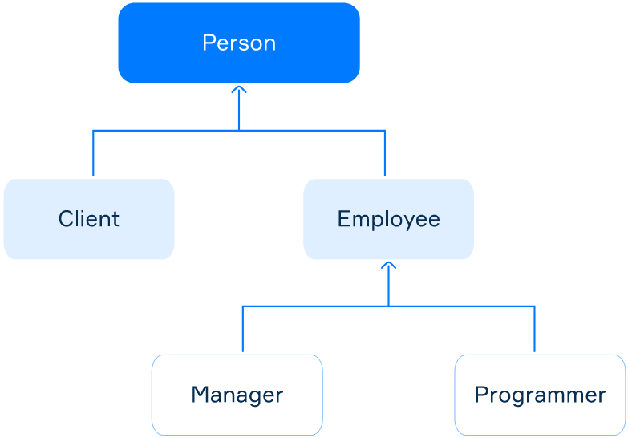

Inheritance is a mechanism for deriving a new class from another class (base class). The new class acquires some fields and methods of the base class. Inheritance is one of the main principles of object-oriented programming. It allows developers to build convenient class hierarchies and reuse existing code.
When it comes to inheritance, there are several terms. A class derived from another class is called a subclass (it's also known as a derived class, extended class or child class). The class from which the subclass is derived is called a superclass (also a base class or a parent class).
To derive a new class from another, the keyword extends is used. The common syntax is shown below.
class SuperClass { }
class SubClassA extends SuperClass { }
class SubClassB extends SuperClass { }
class SubClassC extends SubClassA { }There are important points about inheritance in Java:
C can extend class B that extends
class A);
A subclass inherits all public and protected fields and methods from the superclass. A subclass can also add new fields and methods. The inherited and added members will be used in the same way.
A subclass doesn't inherit private fields and methods from the superclass. However, if the superclass has public or protected methods for accessing its private fields, these members can be used inside subclasses.
Constructors aren't inherited, but the superclass's constructor can be invoked from the subclass using the special
keyword super. This keyword is discussed in more detail in another topic.
If you'd like the base class members to be accessible from all subclasses but not from the outside code (excluding
the same package), use the access modifier protected.
Inheritance represents the IS-A relationship. A base class represents the general and a subclass represents the particular or specific.
Let's consider a more graphic example. A telecommunication company serves clients. It has a small staff consisting only of managers and programmers. Let's consider a class hierarchy for people associated with the company's activities (including clients).
At first, we present the hierarchy as a figure. An arrow indicates that one class extends another one.
The class hierarchy for the telecommunication company
Person has fields for storing common data: name, year of birth, and address;Client has additional fields to store the contract number and status (gold or not);Employee stores the start date of work for the company and the salary;Programmer has an array of the programming languages a programmer uses;Manager may have a dazzling smile.Let's see the code:
class Person {
protected String name;
protected int yearOfBirth;
protected String address;
// public getters and setters for all fields here
}
class Client extends Person {
protected String contractNumber;
protected boolean gold;
// public getters and setters for all fields here
}
class Employee extends Person {
protected Date startDate;
protected Long salary;
// public getters and setters for all fields here
}
class Programmer extends Employee {
protected String[] programmingLanguages;
public String[] getProgrammingLanguages() {
return programmingLanguages;
}
public void setProgrammingLanguages(String[] programmingLanguages) {
this.programmingLanguages = programmingLanguages;
}
}
class Manager extends Employee {
protected boolean smile;
public boolean isSmile() {
return smile;
}
public void setSmile(boolean smile) {
this.smile = smile;
}
}This hierarchy has two levels and five classes overall. All fields are protected , which means they're
visible to subclasses. Each class also has public getters and setters, but some are skipped in the code as these
classes use the default no-argument constructor.
Let's create an object of the Programmer class and fill the inherited fields using the inherited
setters. To read the values of the fields, we can use inherited getters.
Programmer p = new Programmer();
p.setName("John Elephant");
p.setYearOfBirth(1985);
p.setAddress("Some street, 15");
p.setStartDate(new Date());
p.setSalary(500_000L);
p.setProgrammingLanguages(new String[] { "Java", "Scala", "Kotlin" });
System.out.println(p.getName()); // John Elephant
System.out.println(p.getSalary()); // 500000
System.out.println(Arrays.toString(p.getProgrammingLanguages())); // [Java, Scala, Kotlin]We also can create an instance of any class included in the considered hierarchy.
So, inheritance provides a powerful mechanism for code reuse and writing convenient hierarchies. Many things in the real world can be simulated, like hierarchies from a more general to a more particular concept.
If a class is declared with the keyword final, it can't have subclasses at all.
final class SuperClass { }If you try to extend the class, a compile-time error will occur.
Some standard classes are declared as final: Integer, Long, String,
Math. They can't be extended from.
Inheritance allows you to build class hierarchies when subclasses (children) take some fields and
methods of the superclass (parent). Such a hierarchy can have multiple levels, but every class can inherit only from
a single superclass. A good class hierarchy helps to avoid code duplication and makes your program more modular. If
a class shouldn't have subclasses, it should be marked as final.